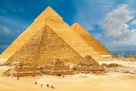
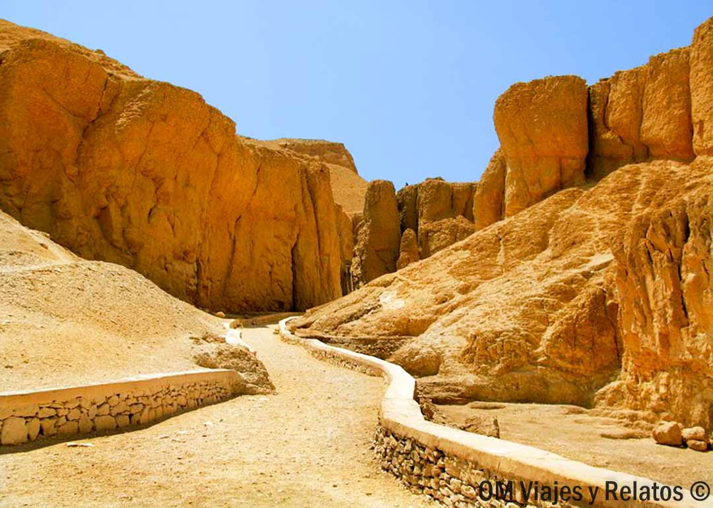
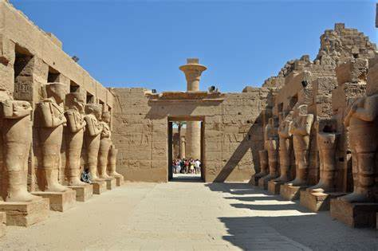
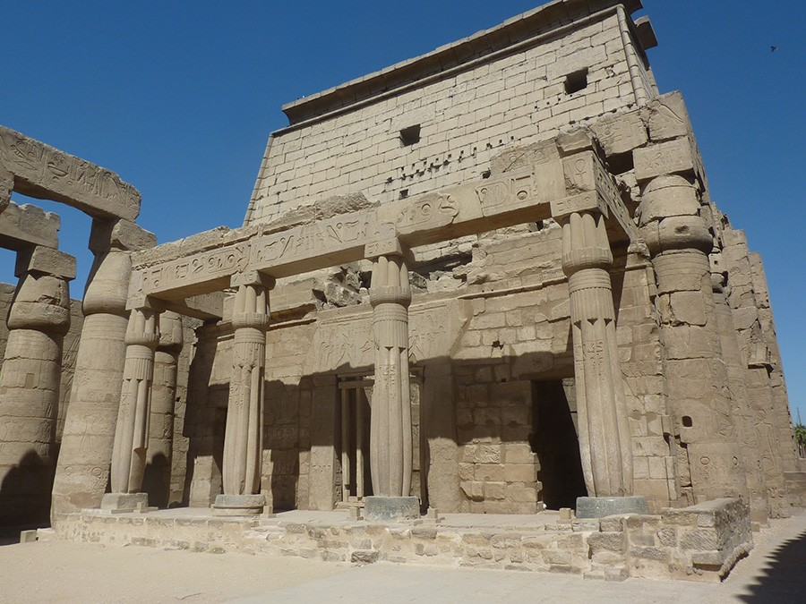
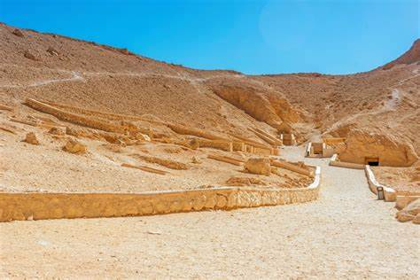
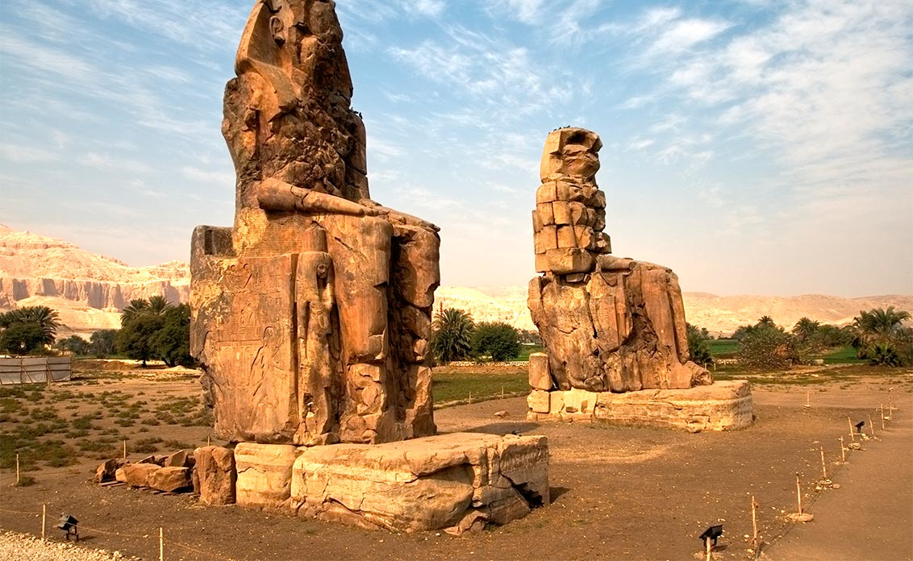

¿Cual seria mi viaje perfecto?
Egipto
Piramides de Giza

En pimer lugar, me encantaria visitar las piramides de Giza, Visitar las Pirámides de Giza no solo es verlas por fuera, sino que es posible entrar dentro de algunas de ellas y también cuentas con otros puntos de interés que no deberías perderte. Como curiosidad, en la necrópolis hay 9 pirámides y, por ello, merece la pena contemplar la perspectiva desde varios de sus miradores. No te preocupes, te destacamos los mejores a continuación.
Luxor
- Valle de los reyes.
Este es uno de los sitios más famosos de Luxor, donde se encuentran las tumbas de los faraones, incluyendo la famosa tumba de Tutankamón.
Puedes explorar varias tumbas de faraones y nobles, algunas de ellas están decoradas con impresionantes pinturas y relieves.

- Templo de Karnak.
Es uno de los complejos religiosos más grandes de Egipto, dedicado a los dioses Amón, Mut y Jonsu.
Famoso por su enorme sala hipóstila con 134 columnas gigantescas.
El templo está lleno de jeroglíficos, estatuas y obeliscos.

- Templo de Luxor.
Situado en la orilla este del Nilo, este templo es uno de los mejor conservados y fue dedicado a Amón-Ra.
El Templo de Luxor está conectado con el Templo de Karnak por la Avenida de las Esfinges.

- Valle de las reinas.
Este es el lugar de descanso final de las reinas egipcias, princesas y príncipes.
En el valle, puedes visitar la tumba de Nefertari, una de las más hermosas y mejor conservadas.

- Colosos de Memnón.
Son dos enormes estatuas de piedra que representan al faraón Amenhotep III.
Están situados a las afueras del Valle de los Reyes y son un espectáculo impresionante.

Enlace para contratar viaje a Egipto